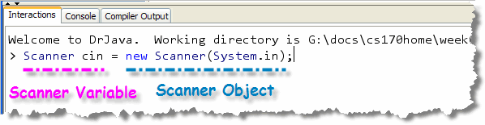
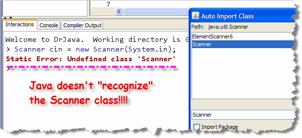
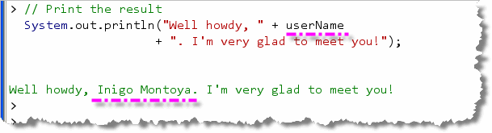

In traditional console programs
(those that make use of the
system console), the standard input stream, System.in
can be used to read from the console keyboard, just like
System.out can be used for console output.
Unfortunately, there are two difficulties with this:
- the
System.inobject only knows how to read raw bytes, not strings or numbers. - because it is possible that an input error could occur,
Java requires code using
System.in.read()to explicitly handle any exceptions that can occur, something that is a little too complicated for the first few chapters of this text.
To make up for these deficiencies in the standard input stream,
the Scanner class was added to Java 5 to make
reading data from the keyboard easier than in previous
versions of Java. The Scanner class uses of
the standard input stream, System.in, but
allows you to read strings and numbers without complications.
Object Variables
Java has two major ways of representing data: primitive
types like numbers and characters, and object or
library types
like fonts, buttons, Strings and the
Scanner that we'll use for input.
While you won't be defining your own custom types (called
classes) until later in the semester, you will need to know how to
create object variables to do input.
Recall that you define or declare a variable by explicitly describing:
- What kind (type) of thing will be stored in the variable
- What name you want to use for the variable
- What initial value the variable should have
To store a value into your variable you use the assignment
operator. The assignment operator copies the
value on its right, and stores it in the object on its left.
To create a local variable of type Fraction (a
class type that I've defined), write something like:
 As you can see, the variable's type is
As you can see, the variable's type is
Fraction, and the variable's name is
oneHalf, but how do we provide a value?
Constructing Objects
What should we put on the right-hand-side of the assignment operator? If our variable was one of Java's primitive numeric types we could use a literal value to do something like this:
int someNumber = 27;
Since oneHalf is an object or reference
type, however, we need to learn how to construct an
object; we can't just use a literal value like 27.
Fortunately, constructing an object is easy; you use the
keyword new along with a constructor.
A constructor is simply a method that initializes objects.
A class represents a blueprint that describes
the attributes and methods of an object and the constructor is
the factory that creates the goods.

Constructors always have the same
name as the thing you're trying to create. Since we're trying
to create a Fraction object, we know that the
constructor is a method named Fraction(). Now we can
finish what we started:
Fraction oneHalf = new Fraction( . . . );
Constructor Arguments
Well, more or less finished. Notice that constructor argument list is empty—there's nothing inside the parentheses. Most objects have several constructors, each one taking a different number or type of arguments. Just as with methods, arguments allow us to customize its operation.
One version of the Fraction class takes two integer
parameters, representing the numerator and denominator. Here
is code to create
three Fraction variables:

 and here's what those three variables, along with
the objects created by the constructors, look like
in memory.
and here's what those three variables, along with
the objects created by the constructors, look like
in memory.
The biggest difference between object and primitive
variables is that with primitives, the variable you create
contains a value. With objects, the variable
that you create only refers to the object. That's why
in my example here, the two variables b and
c both refer to (or share) the same
Fraction object.
Again, we'll cover this in greater depth later in the text. For the first half of the course, we'll concentrate on programming fundamentals, using mostly the primitive numeric types and some classes from the Java class libraries.
Introducing the Scanner Class

To do a few experiments with the Scanner class,
I'm going to use DrJava's Interactions
Pane. This will let me try out each individual programming
step, without having to write an entire program. To get the most out
of this, follow along on your computer.
Step 1: Create a Scanner Object
Start by creating a Scanner variable.
I'll call my variable cin (which stands for
Console Input, and is the name of the similar console input object
in the Standard C++ library).
Once you create the variable, you need to initialize it by
calling its constructor, using the new operator.
The Scanner constructor
needs a parameter, which tells it where to get the raw bytes
that it will process. Pass the standard input stream, System.in:

This should look pretty familiar; it's almost exactly the same as the examples shown at the earlier with theFraction
class. The only thing that's really changed are the type of
the object variable, and the kinds of arguments you
need to supply.
Type this in and then press the Enter key to interpret and execute the statement.

Well, don't worry. That just brings us to Step 2. Before you take that step though, cancel the "Auto Import Class" dialog box. Although DrJava will try to help you by adding the necessary code, I want you to recognize the problem, and add the needed code yourself.Step 2: Import the Scanner
Before you can actually create a Scanner
variable or object, you have to make the Scanner
class "available" to your program. The class isn't
part of the java.lang package, like the System
class is, so you have to import it into your
program. The Scanner class is in the java.util
package, which, as its name suggests, contains commonly used utility
classes.
To import a package you use an import statement like one of these:
 This first
This first import line is called a specific
import, since it only refers to a single class.
The second example shows a wildcard import
statement that makes all of the classes in the java.util
package available.
Once the import statement has been added, use the
"up-arrow" to re-execute the previous statement,
which creates the Scanner object without any errors.
Step 3: "Prompt" the User for Input
When you ask the user for input, you have to first tell them what to type. You don't want just a blank screen with a blinking cursor! That's not user-friendly.
Telling the user what input to type is called prompting
the user. You can use the System.out print()
and println() methods. If you use print()
then the user input on the same line as the
prompt, which is often the most natural.
For instance, if we want to ask the user to enter their name, we might write:
System.out.print("So, what's your name then? ");
Notice the space following the prompt, so that the user input doesn't start immediately after the question mark.
This is an important concept when working with console I/O: always let the user know exactly what kind of information they should enter.
Step 4: Read the Input
To read the name that the user enters,
(as a String), you use the
Scanner class next() or
nextLine() method. If you want to get
just a single word, like the first name or last name,
then use the next() method. If you use
nextLine(), then the Scanner returns
everything on the line, no matter how many words the user types.
When we receive input from the user, we'll need to
store it somewhere in memory. As you may have guessed, that means
we'll need to create a variable. Since we asked for the
user's name, that means we want a String
variable, not an integer.
Let's try it; type this into the Interactions Pane, making sure,
as you type each line, you use Shift-Enter to
end the line, so that DrJava doesn't interpret and execute
the line immediately:
 This fragments consists of two executable lines:
one that asks the user to enter their name, and one that
reads the user's response.
This fragments consists of two executable lines:
one that asks the user to enter their name, and one that
reads the user's response.
Once you've typed this in, press
Enter all by itself to execute both lines.
When the code is executed, the program stops and waits for the user to
type in some text and then press the Enter key. (The technical
term for stopping like this is called blocking.) Once
the user presses Enter, the information supplied at the keyboard
is retrieved, and stored in the userName variable.
In DrJava, as you can see, the input occurs in the Interactions Pane, and DrJava puts a nice outline around where the user is supposed to type in the response. When you do this in a regular program, you won't get the outline. We'll look at an example of that shortly.
Once you've read the user's response into a variable, then you
can use that as part of your calculation or output. To print
the user's name as part of your output, you could add a
line like this:
